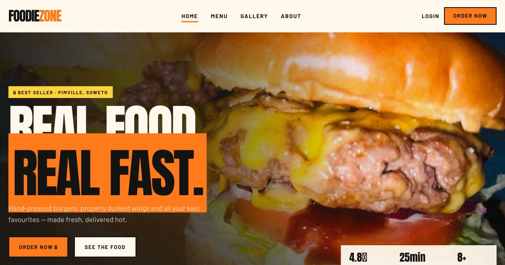
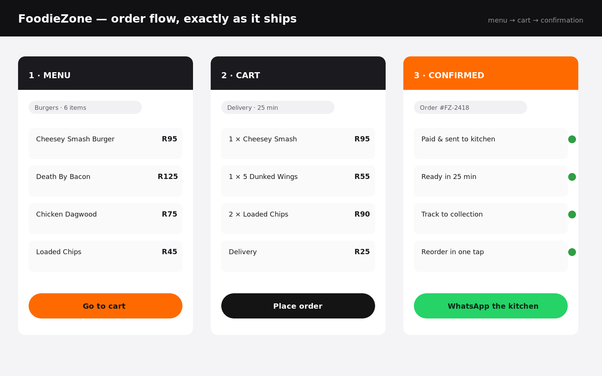

The brief
WhatsApp orders, all day long.
FoodieZone is a home kitchen in Pimville, Soweto, serving daily specials, combos and family meals. Before this project, every order came in via WhatsApp message — read, replied to, tracked manually. Busy service meant missed orders and frustrated customers.
The owner needed one thing: customers order themselves, and I see it on my phone. No app store, no monthly fees, no waiting for a developer to update the menu. A PWA was the right answer — installable, offline-capable, and fast on a South African data connection.
Discovery & research
Understanding the kitchen first.
Before wireframes: two sessions with the owner to map the menu, the ordering patterns, and the pain points. Then a quick teardown of three competing township food ordering apps to understand what works at low data speeds.
- Menu items changed daily — the system had to let the owner update without a developer
- Customers often reordered the same meals — a reorder shortcut would be used constantly
- Connectivity was inconsistent — offline-first caching was non-negotiable, not a nice-to-have
- Most customers were on Android, mid-range phones, 1–2 year old devices
- Payment was cash on delivery — no payment gateway needed at launch
- The owner managed orders alone — the admin view had to be simple enough to use mid-service
Information architecture
Structure before screens.
The menu had four natural groupings: daily specials, combos, single plates and drinks. Card sorting with five regular customers confirmed these were the right buckets. Navigation built around how customers think about food, not how the kitchen organises its stock.
Home screen
Daily specials prominently featured. Category navigation below. Reorder strip for returning customers above the fold.
Menu browsing
Filtered by category. Item cards show name, price, a real photo and an add-to-order tap. No sub-menus, no friction.
Order summary
Running total visible at all times. Edit quantity inline. No checkout — order goes straight to the kitchen on confirm.
Order confirmation
Estimated time, order reference, option to share via WhatsApp or copy the reference. Closes the loop customers expect.
Owner admin
Incoming orders with status toggles (Received → Preparing → Ready). Menu manager: add, edit, hide items without touching code.
Reorder shortcut
Last three orders surfaced on the home screen for logged-in customers. One tap to repeat the whole basket.
UX design
Flows that work on a busy day.
The most important user journey: land on the app, find a meal, add it, confirm the order — in under 60 seconds on a 3G connection. Every screen was tested against that constraint before it was built.
The 60-second rule
Every journey had to fit a number: land, find a meal, into the basket, order confirmed — under a minute on 3G. Six flows were mapped against that clock (browse, order, reorder, search, tracking and the admin side), and the owner walked each one before a single screen was drawn.
Screens that survive a kitchen
Wireframes started from one question: can this be tapped with a floury hand at 1pm? Minimum 44×44px on everything interactive, big labels, no tiny steppers. Paper first, then Figma.
Tested with real regulars
Three of the owner's actual customers clicked through the order flow. The order summary earned one redesign — quantity editing was unclear, so it was rebuilt around it. Fixed before build, not after launch.
Built to be read, not decoded
WCAG AA contrast throughout, descriptive alt text on every dish photo, and status always shown with colour plus text plus icon — nothing colour-only.
Visual design
Warm, fast and unmistakably food.
The visual language needed to feel appetising on a small screen without heavy images slowing the app down. Warm oranges and deep browns referencing township street food, with real food photography provided by the owner.

Colour system
Primary orange #E07B39 for CTAs and highlights. Deep brown #2D1A0E as the hero dark tone. Off-white #FAF6F1 for backgrounds — warm and food-adjacent without being garish.
Typography
Inter for body and UI. Clash Grotesk for headings and prices — large, legible price display was a deliberate choice to reduce "how much?" messages to the owner.
Food photography
Real photos of real dishes, taken by the owner on a phone. Cropped to consistent 4:3 aspect ratio, compressed to under 80KB per image for low-data performance.
Dark mode
Full dark mode implemented — a deliberate choice for a product used in low-light environments like evening orders and indoor kitchens.
Build
Offline-first, installable, fast.
Built as a Progressive Web App: service worker for offline caching, Web App Manifest for install-to-homescreen, and a performance budget of under 3 seconds first load on a 3G connection. Hosted on GitHub Pages — zero monthly cost for the owner.
Service worker
Stale-while-revalidate caching strategy — the app works fully offline and updates in the background when connection returns. Menu items cached after first load.
Install prompt
Custom install banner shown after the second visit. Explains what "Add to Home Screen" means in plain language. Dismissable without nagging.
Performance
Lighthouse score 94/100 on mobile. Images served in WebP with PNG fallbacks. Critical CSS inlined to eliminate render-blocking.
Menu CMS
Owner updates menu via a simple admin interface — no code, no deployment. Changes appear in the live app within 30 seconds of saving.
Outcomes
Orders in the app, not in WhatsApp.
"Orders used to come through messages all day. Now customers order themselves, reorder in a tap, and I change the menu from my phone. It just works." — Owner, FoodieZone